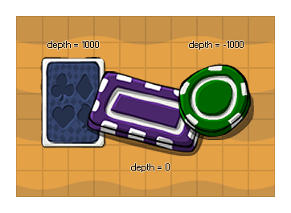

depth
Sets the depth of the instance.
Syntax :
depth
Returns : Real
Description
When you create an object you can assign it an initial depth which defines how the instances of that object will be drawn in the room when the game is being played and this variable can be used to
get and to change the depth of the instance while the game is running. In GameMaker:Studio a low depth (of negative numbers like -1000) means that the instance will be drawn "closer" to the player
and on top of all instances with a lower depth, while a high depth (of positive numbers like 1000) means that the instance will be drawn "further away" from the player and beneath those instances that have
a lower depth.

NOTE : Instances of an object that have the same depth can be drawn above or below each other even when they appear to be placed one on top of the other in the room editor. If you want
to guarantee that something is drawn over or under everything else, you should always set the depth correctly.
WARNING : You cannot set the depth of an instance in it's draw event (all other events are fine). This may lead to some unexpected behaviour and even crash your game!
Example :
depth = -y;
The above code will set the depth of the instance to the negative value of it's y position in the room (this is very handy for isometric games).